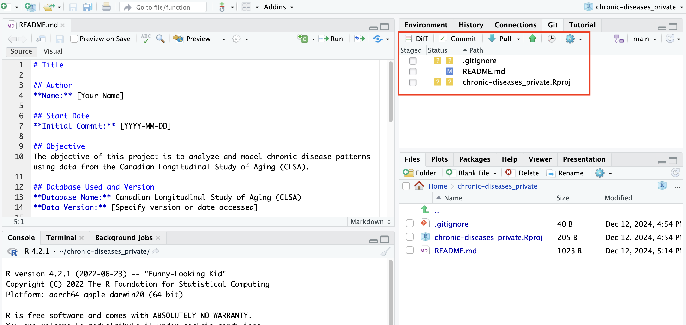
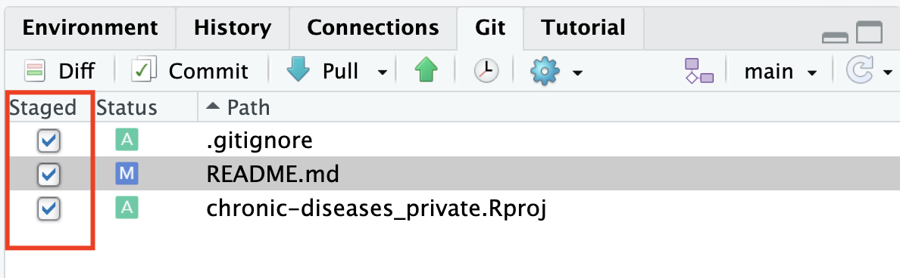
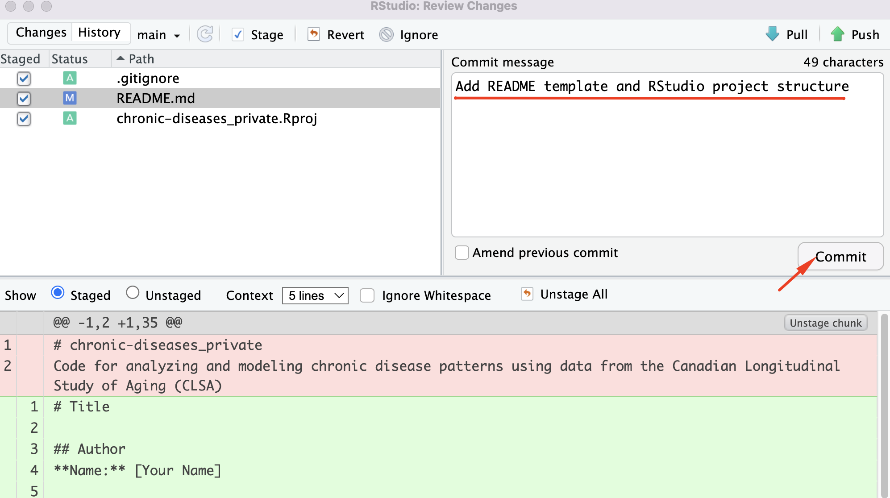
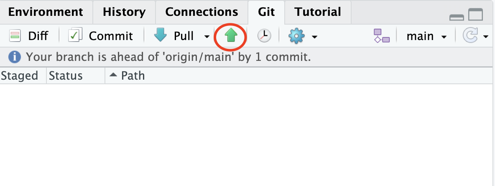

4 Regular Project Workflow
These steps should be completed every day you work on the project. Although they may seem complex at first, once you get accustomed to them, you won’t need to think about it anymore.
4.1 Checklist ✅
- Add all the files you want to commit to the staging area.
- Create a commit message.
- Push the changes to the GitHub repository.
4.2 How to use the Git tab in RStudio
Pay attention to the Git tab located in the top-right corner. Git will only display files that have been added, modified, or deleted since the project was initialized or since the last commit (we’ll cover what that means shortly).
Keep in mind that when we cloned the project from GitHub, two new files were added:
- The
.Rprojfile, created because we based our RStudio project on the repository.
- The
.gitignorefile, automatically generated as part of the project setup in RStudio.
These files will appear with a yellow question mark, indicating they are untracked—in other words, Git is aware of them but has not yet saved them under version control.
The README.md file initially did not appear in the Git tab. However, after adding the template and saving the changes, it now shows a blue “M,” which indicates that the file has been modified.
If you were to remove a file, you would see it next to a red ‘D’, indicating that it has been deleted from the project.

The next step is to save these changes in the project and add a descriptive title. Each time you save a new version of the project, we say you are making a commit, which you label with a title.
4.2.1 Add all the files you want to commit to the staging area.
The first thing you need to do is check in the Staged section of the Git tab all the changes you want to save under the same title. You will notice that sometimes a green ‘A’ appears. You can ignore this. The important part is that you check all the changes you want to save.
In our case, since we are working with non-collaborative repositories and the main purpose of using GitHub is to share data with other coworkers and maintain a backup, there’s no need to focus too much on the details in this section.

4.2.2 Create a commit message.
After doing this, you need to click the commit button to make these changes permanent in the project. You will then choose a message for the commit and click the Commit button.

How Often Should You Commit?
Think of commits as checkpoints for related changes. If you might want to revert a set of changes later, commit them together.
4.3 Push the changes to the GitHub repository.
Finally, to push the changes to GitHub, click the Push button.

You’ll notice that the files in the Git tab disappear after you commit. This is expected, as Git only tracks changes between commits. Remember, if you don’t click the green arrow representing push, the changes will not take effect on GitHub.
If everything went smoothly, you should navigate to the repository URL and see the changes you made.
How Often Should You Push?
Push your changes at least once a day after completing your work.